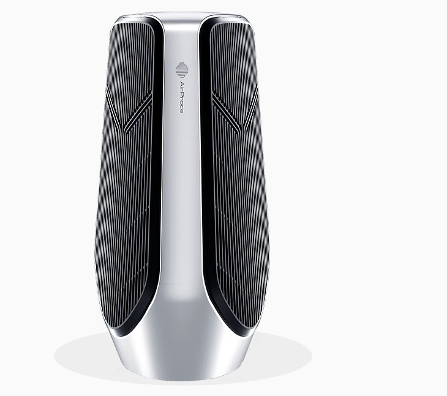

專注研發十年之作，適用於寵物生活的環境。
聯絡我們了解更多
AirProce S9 為寵物環境淨化滅菌系列，標示甲醛 CADR 563 m³/h、TVOC CADR 357 m³/h，以及懸浮物 CADR 867 m³/h。
機身採用 Pyramid 5 層遞進式淨化，並以 3 面送風覆蓋達 1000 尺的空間。
WhatsApp 查詢甲醛 CADR
TVOC CADR
懸浮物 CADR
多重守護和防護，由外至內分為五重。
可濾走頭髮、粉塵等較大的污染物。
沉降懸浮粒子、細菌，有效除異味，並潔淨空氣。
消殺空氣中的細菌病毒。
精準過濾各類微粒。
強力分解甲醛，淨化有害氣體。
大風量舒適風感，覆蓋 1000 尺超大空間。
分解甲醛及揮發性有機化合物，高達 99% 去除率。
多重守護和防護。
Ion Turbo 離子消毒抗菌，UVC 紫外線滅菌。
零懸浮粒子出風，密封處理，拒絕二次污染。
虛擬現實，控制於無形。
吸附快、壽命長、用料足。
0.001 mg/m³ 監測精度傳感器，結合智能空氣算法，精準顯示甲醛濃度數值，實時檢測甲醛、PM2.5 等空氣質量。
刷新全效淨化高度。
可水洗初效濾網初步濾除寵物毛髮、粗塵等多種大顆粒污染物，環保可水洗，適合養寵物的家庭。
AirProce S9 持續釋放千萬級等離子群，主動沉降細菌、病毒等細微顆粒物，除異味、清新空氣。
AirProce S9 配備了 6 個紫外線燈管，涵蓋內部空間，不但有效殺死病毒和細菌，更可以消除異味。
利用靜電吸附技術精準捕獲和阻擋微細微粒，防止細菌和病毒滋生。
強力分解甲醛，淨化有害氣體。